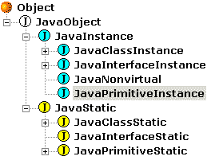

|
JNIPort for Dolphin Smalltalk |
|||||||||
|
Back to Goodies |
Basic JNIPortThe basic level of JNIPort, in package 'CU Java Base', uses the raw JNI functions exposed via package 'CU JNI' and builds a framework for manipulating Java objects and classes via Smalltalk proxies.
The proxies for Java objects don't have a special name in JNIPort, I tend to refer
to them as [instance] wrappers, or occasionally as proxies.
They are instances of subclasses of
The “proxies” for Java classes are called class statics;
of course they aren't really proxies, in the normal sense of the word, because there
is no object in Java that they are a proxy for. Still, they provide an
Facade that exposes the static members of Java classes as if they were attached to
some object (which, in fact, they probably are — hidden away inside the Java
runtime somewhere). They are instances of subclasses of
For more information on instance wrappers and class statics, see the description of the main players of JNIPort. For an example of using this level of JNIPort, see here . Class
|
#equals_Object: |
#notify_null |
#wait_long: |
#getClass_null |
#notifyAll_null |
#wait_long:int: |
#hashCode_null |
#toString_null |
#wait_null |
Additionally:
#equals:,
#getClass,
#hashCode, and
#toString, are Smalltalk-style aliases for the corresponding
Java methods (note that #toString answers a reference to a
Java string).
Smalltalk equality (#=, and
#hash) is defined on these object so
that it corresponds to an identity comparison of the underlying Java objects
JavaClassInstance
These objects wrap raw JNI references, manage their lifetimes, and act as proxies for the underlying Java object. They are, with class statics and the JVM object, the most important objects in the JNIPort system.
This class establishes a framework for such proxies. It has arbitrarily many subclasses (especially
if ghost classes are turned on!) that are used to wrap instances of specific Java classes. Often,
such custom wrapper classes would be derived from JavaLangObject,
since all Java classes inherit from java.lang.Object, but that is
not a requirement.
JNIPort provides a way for subclasses to declare that they correspond to some specific
Java class (it is actually the #javaClassName method
on the class-side, see the section on wrapper classes
for more details). When JNIPort encounters a reference to a Java object of the corresponding
class (or a subclass) it creates a proxy of the designated Smalltalk class.
The idea is that the custom wrapper class will define helper methods that hide the need to
send messages like #callObjectMethod:signature:withArguments:
as described above. You can create these wrapper classes by hand, but that quickly becomes
tedious, so the higher level of JNIPort provides two ways of automating the process. The
Wrapper Wizard, writes forwarding methods for you, and
ghost classes take the idea further and makes the process
entirely dynamic and automatic.
In normal operation, JNIPort creates a new JavaClassInstance
whenever it encounters a new JNI reference to the underlying Java object. That is, more than one
instance may be acting as a proxy for the same Java object. Under most circumstances that works
perfectly well, but sometime it may be necessary to ensure that a Java object is always represented by
one specific proxy. This may be important, for instance, if the wrapper class adds per-instance
state, or simply to allow fast comparisons using #==). For this
reason, JNIPort provides the notion of a canonical proxy. If an instance has been told
to #beCanonical then JNIPort will ensure that any subsequent
references to the Java object will be represented by that specific instance. This is implemented
using a weak set held by each class static; see the object
lifecycle for more information. This feature can be turned on on a per-class basis as well,
see JavaClassStatic>>haveCanonicalInstances,
JavaClassStatic>>haveCanonicalInstancesByDefault, and
JavaClassInstance class>>haveCanonicalInstancesByDefault.
JNIPort comes with some standard classes for wrapping Java strings and arrays. These are
all subclassed from JavaAggregate. Which, incidentally, is
an example of the way that the hierarchy of wrapper classes does not need to follow the
Java hierarchy, if there is some useful commonality that can be exploited. In this case
the commonality is that they share code to give them a Smalltalk-style interface.
For instance, all Java arrays and strings are wrapped in objects that understand
the #at: message (which takes a 1-based index).
Arrays also understand #at:put:, strings don't because
Java's strings are immutable. They also understand the basics of the Collections
protocols, such as #do: and #size.
There are various ways of creating arrays; you can use the class-side
#new:jvm: of the corresponding wrapper class, or you
can send #newArray: to the class static. For instance
this code creates an array of 9 doubles and 10
java.lang.Strings:
jvm := JVM current.
doubleArray := JavaDoubleArray new: 9 jvm: jvm.
stringClass := jvm findClass: #'java.lang.String'.
stringArray := stringClass newArray: 10.
There are also several ways of creating Java strings. The easiest is to send
#asJavaString: to a Smalltalk string:
jvm := JVM current.
javaString := 'Test!' asJavaString: jvm.
You can convert Java arrays into Smalltalk arrays with #asArray,
and Java strings into Smalltalk strings with #asString.
Note, however, that not all Java strings can be represented in Dolphin Smalltalk since
Dolphin does not yet support 16-bit characters.
Java byte[] arrays and Smalltalk
ByteArrays can be converted into each other with
#asByteArray and
#asJavaByteArray:
respectively. The conversion also maps between Smalltalk's unsigned bytes and
Java's signed ones.
JavaInterfaceInstance
The second subclass of JavaInstance can be used to represent
Java objects that are known to implement some interface.
Java makes heavy use of interfaces; they are one of Java's best features, but they do
cause a problem for wrapper classes. For instance, the Java interface
java.util.Iterator defines two useful methods for looping
over Java collections, but there are many Java classes which implement
the interface and they are not related by inheritance. The problem is that, while it is
easy to generate a wrapper for any one of those classes, you wouldn't want to have to
duplicate the wrapper code for all the rest of them.
There are several workable solutions to the problem; JNIPort has one built in — interface instances. Roughly, the idea is that, just as for instance wrappers, you tell JNIPort that a certain wrapper class should be used for Java objects that implement a certain interface. It will then arrange to wrap those objects in instances of your class. However, the picture is different in one important aspect: JNIPort always wraps a reference to a Java object in the proxy class that is most appropriate given the Java object's class; it can't do that with interfaces. A Java object has exactly one class, but may implement several interfaces, so JNIPort can't follow the usual pattern in this case. The way that this is handled is that interface instances are more like Adaptors; they take an existing wrapper object (with its own class static and so on), and put it inside another object, with a different class static, that “knows” about the interface and how to invoke its methods.
These secondary wrapper objects are created by sending
asInstanceOf: to an existing wrapper, where the parameter
is the class static of the interface you are interested in. Alternatively the
asA: method takes the Symbol name of the interface.
For instance, if you have a reference to a Java object that you know implements
java.util.Iterator, but which doesn't have a special wrapper
class of its own. Because it doesn't have a custom wrapper class, the instance
will be wrapped in the fallback JavaLangObject,
and not know anything about the methods of Iterator.
You can send asA: #'java.util.Iterator' to it
to get back an adaptor that not only understands #hasNext
and #next, but is able to understand
#do:. (This example requires the 'CU Java Additional
Wrappers' package.)
JavaNonVirtual
The last useful subclass of JavaInstance is of minor importance,
indeed it is more than slightly esoteric. It wouldn't exist at all except that it falls, almost
for nothing, out of the implementation, and provides a way of exposing one of JNI's features
that otherwise would have been hidden.
A JavaNonVirtual is an object that pairs a class static with
an instance wrapper. It acts as if the underlying object were an instance of the Java class
corresponding to the class static, but it bypasses Java's virtual method invocation.
For example, sending #super to any instance proxy will
answer a JavaNonVirtual that pretends that the underlying
Java object is really an instance of its superclass. Given a Java Point object, calling its
toString() method will answer a Java string describing the point:
class := JVM current findClass: #'java.awt.Point'.
point := class new.
point toString.
"--> a JavaLangString(java.awt.Point[x=0,y=0])"
but sending #super to it will answer a different view of
the same object that does not override the implementation of
toString() that it inherits from
java.lang.Object:
point super toString.
"--> a JavaLangString(java.awt.Point@0)"
Please note the non-virtual object will not be a member of any of the wrapper classes
so, except for the methods of java.lang.Object, it can only
be accessed using the low-level methods of JavaObject.
JavaPrimitiveInstance
The final subclass of JavaInstance is used internally
by JNIPort. No instances of JavaPrimitiveInstance
are ever created.
JavaStatic
JavaStatic is second of the two immediate subclasses
of JavaObject; its instances stand for Java classes and
interfaces. They are known as class statics.
Class statics provide access to the “static members” of a Java class in the same way that instance wrappers provide access to the non-static members. They also provide a way to call the constructors of a Java class.
There are subclasses of JavaStatic that correspond
to Java classes, interfaces, and primitive types. Although this breakdown resembles
that below JavaInstance, the parallel is misleading.
The subclasses of JavaInstance are fundamentally different
things with different roles, whereas the subclasses of
JavaStatic are all very similar. In fact the breakdown
is more to allow JNIPort to substitute polymorphism for runtime tests, than it is to
reflect real semantic differences. One exception is that only the subclass
JavaClassStatic defines the methods
for calling Java constructors (since you cannot instantiate interfaces or primitive
types).
Instances are always paired with a java.lang.Class object
for that class or type. The class object has a JNIPort wrapper in the normal way,
actually an instance of JavaLangClass. The class object
exposes the fixed set of 30 (or more) methods that all instances of
java.lang.Class understand. The class static understands
the programmer-defined fields and methods of the Java class. Class objects know what class
static they are paired with (and answer it to #classStatic);
class statics know what class object they are paired with (and answer it to
#classObject).
Each instance wrapper knows that it “belongs to” the class static that
stands for its Java class. The message #static will
answer the owner.
The other common way to find a class static is to look it up by name; the JVM object
understands #findClass:, which takes the Symbol
name of a Java class, interface, or type, and answers the corresponding class static.
For instance:
jvm := JVM current.
jvm findClass: #'java.awt.Point'.
jvm findClass: #'int'.
jvm findClass: #'java.lang.String[]'.
jvm findClass: #'double[][]'.
(Class statics can also be obtained by asking other
<javaClassFinder>s, such as the new “supplementary
classloaders”, but that feature is still experimental, and is not discussed further here.)
Class statics know how to wrap JNI references in proxies of the correct class (this is their most important role in the implementation of JNIPort). They work with the class registry to maintain the mapping from Java classes to Smalltalk wrapper classes, See the Players section for more detail on this.
Class statics know about their place in the Java class hierarchy. There are a number
of methods in the category 'Java class hierarchy' that provide access to this;
#javaSuperclass is the most basic. Note that you can
only ask for the known subclasses, neither JNIPort nor the Java runtime itself
can possibly determine how many more subclasses may later be loaded (or even created).
Class statics also know how to create Java arrays of the right type to hold values
of their Java class. For instance the class static for Java's int
primitive type knows how to create int[] arrays:
jvm := JVM current.
intClass := jvm findClass: #'int'.
array := intClass newArray: 10.
"or"
array := intClass newArrayWithAll: #( 1 2 3 4).
See the methods in category 'arrays' for more ways to create arrays.
The subclass JavaClassStatic has methods for invoking
the Java class's constructors. The are in category 'instance creation'. Calling
a constructor is like calling a Java method, except that there is no method name. You
have to supply a signature string and a JNIValueArray to
hold any parameters.
JavaStatic is intended to be a superclass for custom
subclasses that wrap the class-side of a Java class, in very much the same way that
custom subclasses of JavaInstance wrap the instance-side.
JNIPort uses the same kind of mechanism for associating a custom subclass with
some specific Java class (and its subclasses). Similarly the Wrapper Wizard
and ghost classes provide ways of automating the process. See the
Wrapper Classes section for more detail. JNIPort has many examples of this.
Copyright © Chris Uppal, 2003-2005
Java, JNI (probably), JVM (possibly), and God knows what else, are trademarks of Sun Microsystems, Inc.